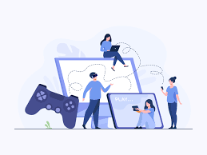
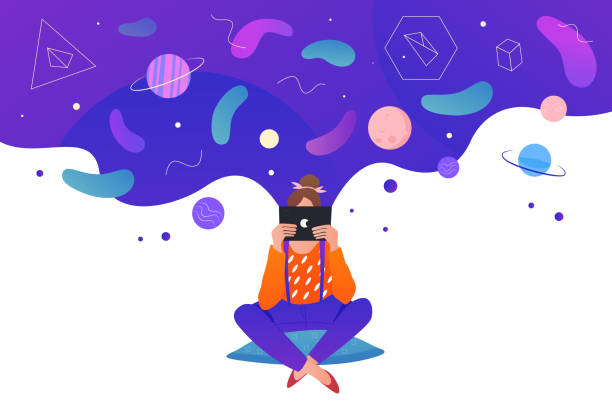
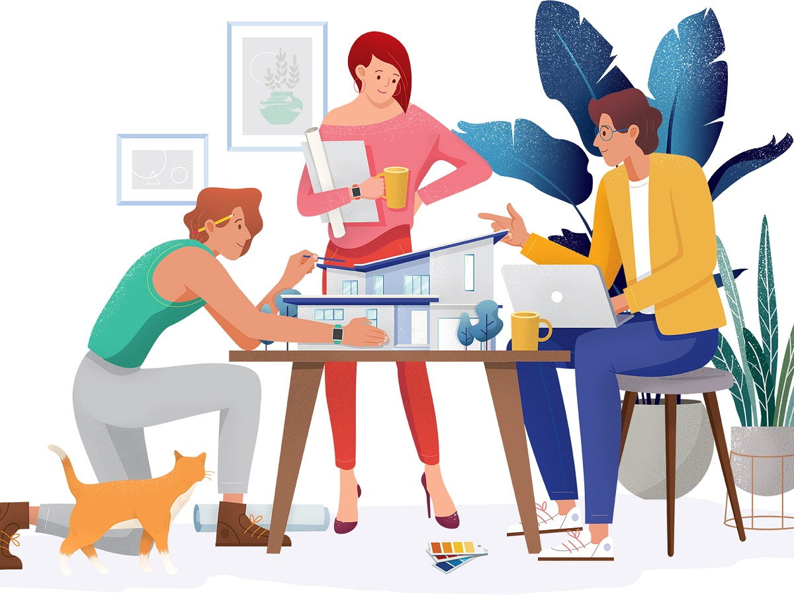

How to avoid Procrastination and have a great focus.
1. Schedule tasks in your calander
• If you do not complete the task despite scheduling it in your calander , then you are
procrastinating cause you had time to do that particular task . you were not busy in some more
important task than the scheduled task.

2. Do not think yourselves as Humans.
• Instead think yourselves as Systems that are designed to do tasks in
an organised fashion and not pushing beyond your limit to complete particular tasks.
• Add small beneficial changes to your tasks which makes you more likely to complete them.
• Add small beneficial changes to your tasks which makes you more likely to complete them.
3. Gamification.
1. Epic Meaning and Calling
• Find a wider and meaningful purpose in whatever the tasks you are doing.

2. Development and Accomplishment
• Motivate yourself by reminding yourself about the progress about the task
you are
doing.
• you can make a To-do List and can motivate yourself by tick marking the tasks you have done which would give you a sense of progress.
• you can make a To-do List and can motivate yourself by tick marking the tasks you have done which would give you a sense of progress.
3. Empowerment of creativity and Feedback
• Find different ways of approaching a particular task in a creative way.
• Test yourself often to remind yourself that you have to improve.
• Test yourself often to remind yourself that you have to improve.

4. Ownership and Possession
• If you find something boring, put more efforts to it rather than just giving your bare
minimum efforts casue
you do not like the task.
• if you put more efforts to that particular task, you will find it interesting cause you
will start seeing progress in that particular task.
• If you can’t get any creative way of aproaching towards a task and you find it completely
boring, tell yourself , “You do not have to do it” , “you got to do it”.
• tell yourself that you got this oppurtunity, this privilage to do this work.
• if you put more efforts to that particular task, you will find it interesting cause you
will start seeing progress in that particular task.
• If you can’t get any creative way of aproaching towards a task and you find it completely
boring, tell yourself , “You do not have to do it” , “you got to do it”.
• tell yourself that you got this oppurtunity, this privilage to do this work.
5. Social Influence.
• try doing boring tasks as a group.
• if you have to prepare for some exam, instead of doing it alone, do a group study to kill bordem by following pomodoro technique.
• you can also do a group study online in a meeting.
• if you have to prepare for some exam, instead of doing it alone, do a group study to kill bordem by following pomodoro technique.
• you can also do a group study online in a meeting.
